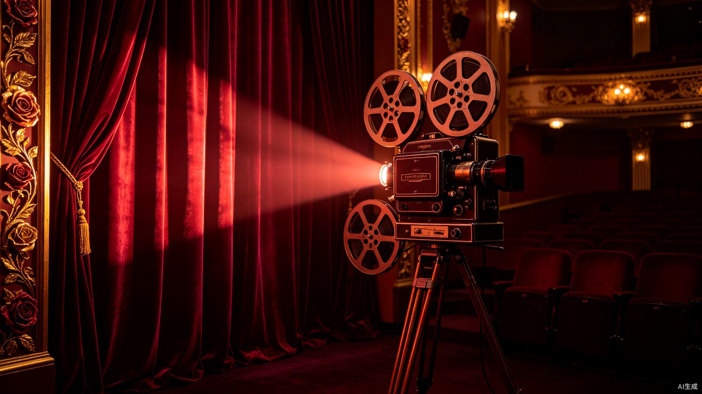

科幻

本周推荐
动画
千与千寻
剧情
寄生虫
最新动态
诺兰的时间叙事
从《记忆碎片》到《信条》，解析克里斯托弗·诺兰如何用非线性结构重塑观众对时间的感知。
宫崎骏的色彩世界
探讨吉卜力工作室如何通过水彩手绘风格传递情感温度，从色彩心理学角度解读经典画面。
从零开始的剪辑课
系统学习视频剪辑技巧，从基础剪辑到高级调色，掌握专业工作流。
进度
68%
AI 前沿
AI 视频生成
探索Sora、Runway等AI视频工具如何革新影视创作流程，从脚本到成片的自动化尝试。
智能字幕
Whisper与多语言自动字幕技术，让跨语言影视内容触达更广泛的观众群体。
AI 影评分析
利用自然语言处理与情感分析，从海量影评中提取观众对影片的核心评价维度。